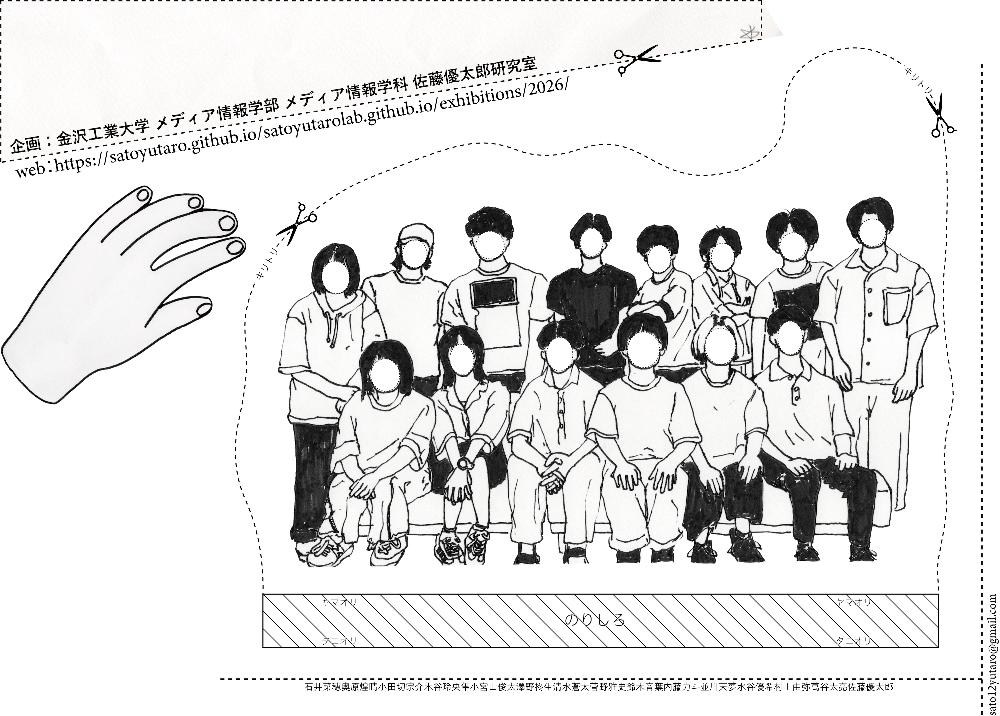

2026年
11月6日（金）13:00-18:00
11月7日（土）11:00-16:00
金沢工業大学 扇が丘キャンパス
ライブラリーセンター
1階 展示室
佐藤研究室は、自分の身体はなぜ自分のものであるとわかるのか？という関心をひとまずの軸として、
身体的な錯覚の考案やメディア表現に関する研究・制作を行う研究室です。
本展示は、
2025年立ち上げの佐藤研究室が企画する最初の展示で、2026年度の一期生の出展物が主となります。
初期と呼ぶほかないタイミングで開催する展示です。研究室の方針を固めていくための展示であり、
数ヶ月前、展示を構想した当初の、コンセプトもなにも決まっていない感じがタイトルからみてとれます。
面白い展示であるという約束を避けた危ういタイトルです。
告知のためのチラシやwebを整えている今の時点ではどうなのかというと、
自分の手指が伸びたり、固まったり、へにゃり曲がったり、
胸を開いたり、痛くない注射器を刺されたり、映像空間の中に確かに存在するシャープペンの芯を感じたり、ほかVR装置などなど、、、
裏メニュー含む16もの魅力的な作品が揃いそうです。
告知をしたくなるくらいには、面白い展示になりつつあります。
しかし、来場者にはおよそ関係のない研究室の事情が反映された展示タイトルからは、
その面白さを読み取ってもらうことは難しそうです。
今からでも展示内容を想像させるイメージ豊かなコンセプトを打ち出すべきなのかもしれませんが、
やはり展示タイトルは据え置くことにします。
初期と呼ぶほかないタイミングで開催する展示なのだから。
上体散歩日和 | 鈴木音葉
影による非相似な身体変形 | 小宮山俊太
ぴかり皮膚変形 | 水谷優希
痛くない注射（注入・摘出） | 木谷玲央隼
頭まち針 | 石井菜穂
開胸錯覚 | 並川天夢
ペーパーライクボティ | 菅野雅史
ペリマウスカーソルスペース | 清水蒼太
顔と頭部の分離 | 澤野柊生
シャー芯は今日も迷子 | 小田切宗介
誇張しすぎたブリッチ | 内藤力斗
自己誘発型の身体変形 | 奥原煌晴
自己言及的なコントローラー | 村上由弥
ぺったりタブレット | 萬谷太亮
ひふねんど | 佐藤優太郎
絶対安全まち針（裏メニュー） | 佐藤優太郎
石井菜穂・奥原煌晴・小田切宗介・木谷玲央隼・小宮山俊太・澤野柊生・ 清水蒼太・菅野雅史・鈴木音葉・内藤力斗・並川天夢・ 水谷優希・村上由弥・萬谷太亮・佐藤優太郎
金沢工業大学 扇が丘キャンパス
ライブラリーセンター（LC）1F 展示室
〒921-8501 石川県野々市市扇が丘7-1